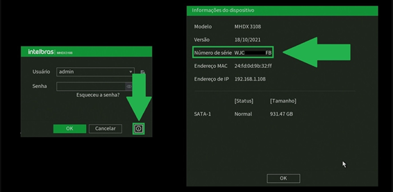
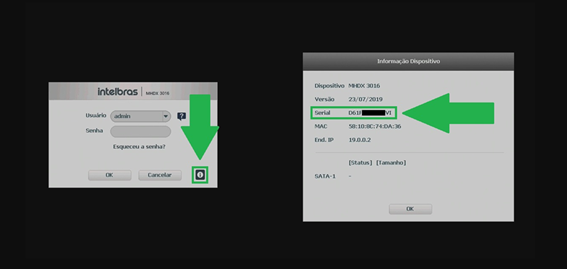
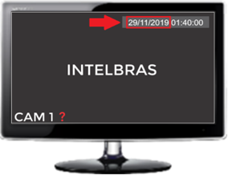
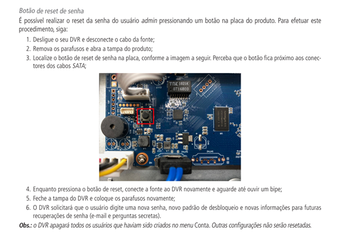
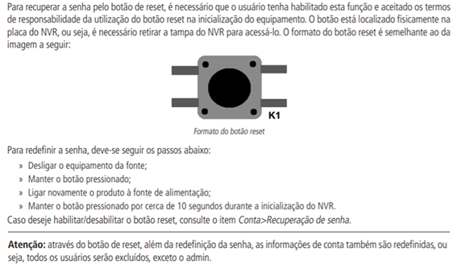

🔐 Recuperação de Senha
DVR / NVR
PASSO 1 - Solicitação de informações! (Modelo/NS/Versão/Data)


PASSO 2- Solicitação da data do DVR!

PASSO 3- Enviar senha para o cliente!
Possíveis ERROS!
Cliente sem monitor
Data do gravador não é exibida
NVD com firmware abaixo de 2020
Cliente tentando dar padrão de fábrica com a senha provisória
Imagens e Tutoriais úteis

